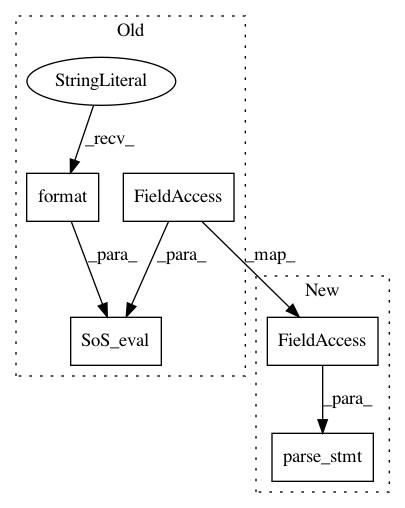

0d031652834db91a665bec3e11276a67256bb4fa,sos/sos_step.py,Base_Step_Executor,run,#Base_Step_Executor#,838
Before Change
stmt = self.step.statements[input_statement_idx][2]
self.log("input statement", stmt)
try:
args, kwargs = SoS_eval("__null_func__({})".format(stmt), self.step.sigil)
// Files will be expanded differently with different running modes
input_files = self.expand_input_files(stmt, *args)
self._groups, self._vars = self.process_input_args(input_files, **kwargs)
except (UnknownTarget, RemovedTarget, UnavailableLock):
After Change
stmt = self.step.statements[input_statement_idx][2]
self.log("input statement", stmt)
try:
args, kwargs = parse_stmt(stmt, self.step.sigil, self.force_remote)
// Files will be expanded differently with different running modes
input_files = self.expand_input_files(stmt, *args)
self._groups, self._vars = self.process_input_args(input_files, **kwargs)
except (UnknownTarget, RemovedTarget, UnavailableLock):
In pattern: SUPERPATTERN
Frequency: 3
Non-data size: 5
Instances
Project Name: vatlab/SoS
Commit Name: 0d031652834db91a665bec3e11276a67256bb4fa
Time: 2017-06-10
Author: ben.bog@gmail.com
File Name: sos/sos_step.py
Class Name: Base_Step_Executor
Method Name: run
Project Name: vatlab/SoS
Commit Name: 0d031652834db91a665bec3e11276a67256bb4fa
Time: 2017-06-10
Author: ben.bog@gmail.com
File Name: sos/sos_step.py
Class Name:
Method Name: analyze_section
Project Name: vatlab/SoS
Commit Name: 315c3661e88f553e4258fb0545f9eb1f2948a316
Time: 2017-06-10
Author: ben.bog@gmail.com
File Name: sos/sos_step.py
Class Name: Base_Step_Executor
Method Name: run